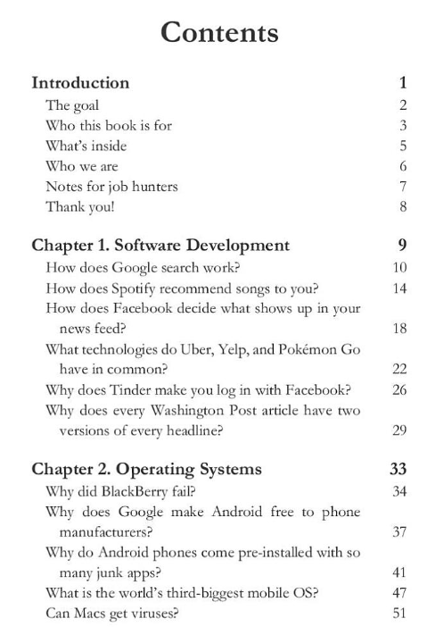
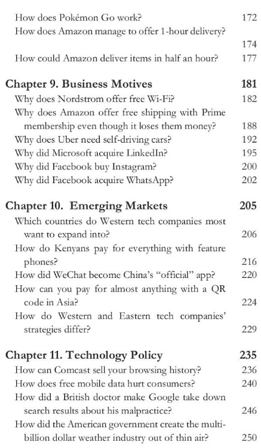

I will give you a book review for swipe to unlock a primer for IT career. It is based on the computer industry, giving you an introduction to technology/business strategy, putting them together basically. And there is a new 2019 edition. I had recently read the 2018 edition and of course there's a new one every few yearly quarters and I recommend going and buying the newest edition. Now this book is a little bit more expensive. It's above $20. I think it's $25, but it is worth it. Trust me, I'm already biased as you get to see so lets get right into it.
Take a look at the first quarter of the table of contents...
So the beginning of the book basically tells you what this book is about, and how it can help you find a job and it kind of tries to sell itself. And in the thank you section the author tells you about posting on social media that they'll basically share your post on LinkedIn.
Chapter 1
There are 12 chapters or sections explaining separate parts of the tech world. The first chapter explains different pieces of software and how they work. Like the Google search section talks about page ranking and how you can increase your page ranking and SEO. What is SEO? How Spotify uses AI in order to recommend songs to you. And it goes on to tell you about Uber, Yelp and Pokemon go and what they have in common. Spoiler It's GPS and Google maps how embedded Google maps works. Next up is how Tinder works which is really GPS and how you can find people around you. And that it is basically a hookup app, meaning t's not even a dating app. But uh, yeah, that's chapter one.
Chapter 2
Chapter two, operating systems, operating systems. Why did blackberry fell? Because it had an operating system that became obsolete because there were no more applications for it. It was a proprietary software, meaning it was a software that was specific to blackberry and it wasn't customizable and it fell out of practice. Google made android free and open-source instead of proprietary. Open source is explained. And chapter 2 basically talks about operating systems in phones and desktops.

Chapter 3
Chapter three is on app economics. It talks about how ads work, how apps use ads, how do you put an app on the Google play store and charge no money yet still make money. How do these different apps actually make money? This chapter is pretty darn cool. You should really read this. The author talks about current trends which is good for catching up.
Chapter 4
Ah, the Internet. In this section how information is transferred across networks is explained. How web servers work and why speed is important.
Chapter 5
It basically explained to what cloud cloud computing is and examples of it. Very important.

Chapter 6
And then we have chapter six big data. What is big data? How, how does big data cause massive retailers to know what we want and what we are going through.
Chapter 7
Hacking and security. What is encryption? What are examples of encryption? What are issues that happened in recent news? Current News events, very, very cool.
Chapter 8
Hardware and robots side. Etc. etc.
So, what is this book about?
This book is a primer is to get you prepared beforehand to enter the technology field. Really, I think this book explains the fundamentals necessary for all fields. We all need to know this stuff because it's embedded as a part of us. It's in our society and our culture and we are losing awareness of it.
In addition Swipe To Unlock gives us news and it also gives us the ability to understand the merger of tech and finance and business. And it also tells us what present technology is like. Big Data, cloud computing, web services, what our servers/how to servers work. And it's filled with definitions and stories to understand these concepts and solidify them for our learning.
What is this book NOT about?
This book is not about legacy business strategies. You're not going to hear business strategies without technology. It's going to be technology and business put together. Finance and tech put together. It's not going to be anything about finance on its own. It's going to be about how technology affects finance or how finance effects technology. And it's also not about the history of technology. So any old systems like dial up, floppy disks and punch cards are not going to be part of Swipe To Unlock.
It's just going to be the most recent stuff. There are some politics but its not absent of tech. It's made pretty interesting really.
Should you buy this book?
YES. Everyone should have a basic understanding of information technology. What does that word mean? Uh, well, you're going to have to learn that somewhere, right? Why? Because we are becoming inseparable from it. If technology is taken from us we won't be able to survive.
Cloud AI, big data is so embedded in our culture, we are not even aware of it.
Final notes
The information in a book like this goes out of date very quickly so I recommend getting the newest editions. And same thing with other types of books like these where you read about trends and current events. Same thing with books about healthcare. Healthcare books sometimes go out of date very quickly. And, you'd have to buy the newest edition every few years.
This is very good book for seeing trends beforehand. So that means that if you own a business you could read this to see more or becoming more aware.
Lastly this is a really, really good book for catching up on cutting edge inventions. Let's say you've been out of the tech world for five years and you just don't know what's going on anymore. This book is really good for that. It's expensive, but it's worth it.